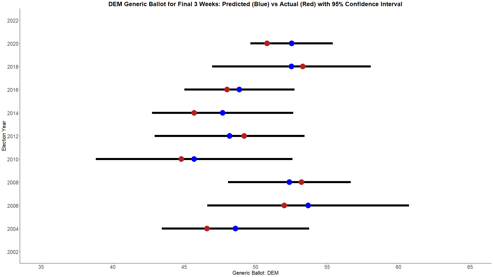

Strap in folks. This is gonna be a long one.
The 2022 House of Representatives forecast came with a new callenge - redistricting. Because the census reassigns the number of congressional districts every 10 years and states redraw their boundries, I needed to get previous election results and census data for these new districts.
In order to accomplish this, I pulled the shapefiles for each state's new map from the state's website. I pulled demographic information from the census using the acs package in R at the block group level. Previous election results were pulled at the precinct level. From there, I mapped each block and precinct to the congressional districts, dividing the census or election results proportionally based on land area if a block group or precinct overlapped more than one congressional district. (It sounds easy in retrospect, but boy did this take the most time to execute.)
From the historical election results, I was able to build one of the most important metrics for the model. This is what I would call "leans." A lean is a very simple but powerful calculation. It is the GOP's two-party vote share minus the Dem's two-party vote share compared to the national two-party vote share for the previous presidential election. As a formula, lean = (GOP_CD / (GOP_CD + DEM_CD)) - (DEM_CD / (GOP_CD + DEM_CD)) - (GOP_US / (GOP_US + DEM_US)) - (DEM_US / (GOP_US + DEM_US)). This metric is extremely powerful. For example, if a lean is equal to 5, this allows you to say, "In a neutral environment (when the generic ballot is tied nationally), this congressional district will vote for the GOP by 5 percentage points." This value will come back a lot later.
In my 2018 model, I just used FiveThirtyEight's pollster ratings. However, everything in 2022 was built from scratch. In order to build my own pollster ratings, I used FiveThirtyEight's dataset for all the polls conducted within three weeks of an election. In theory, these polls should be the best conducted by the pollsters since they are directly before the election.
To calculate the ratings, I first controlled for the type of election, partisanship, sampling error, and the number of days to the election. In short, Presidential elections should be easier to poll than House races. Partisan polls should have stronger bias than nonpartisan polls. Polls with larger sample sizes should be more accurate than those with smaller sample sizes. And, polls conducted the closest to the election should be more accurate than those conducted weeks out.
After controlling for these factors, it became a trial-and-error optimization problem. I tried many, many ways of calculating pollster ratings. In the end, the most robust performer was what I called the "Advanced - Multiplicitive" method, where a poll is weighted as a multiplicitive function of time, sample size, and the pollster's advanced score. This had a cutoff of at least 20 polls (or 5 polls for high performing pollsters), a lookback of 6 years, and bias adjustments for partisan pollsters. Pollsters without a score based on this were replaced with the score of the worst pollster for that year.
Again (and you'll see this is a pattern), this turned into a trial-and-error optimization problem. When using the pollster scores, the best weighting of the generic ballot occurred when:
(1) Only the most recent poll from each pollster is kept - so one pollster does not get an outstanding amount of weight on the overall calculation.
(2) Only keep likely voter (LV) and registered voter (RV) polls. If a pollster has both of these numbers, keep only the LV poll.
(3) RV polls should be shifted 1.5% towards the GOP. There is historical precedent that RV to LV polls shift the overall percent by about this much.
With these rules, the best performing weighing methodology is the Advanced - Multiplicitive score. Below, are the historical performances for predicted and actual generic ballots with a 95% confidence interval.
One thing I find of importance you can see in the charts is that 2020 was egregiously bad for two reasons. The first of which is that we haven't had that large of a miss since 2014. However, what makes 2020's miss so much worse than 2014's is how confident it was. The 95% confidence intervals were much larger in 2014, meaning there was a large variety of predictions. 2020's confidence intervals are the smallest by quite a bit, meaning pollsters were all confidently saying the same thing. Was 2020's prediction within the 95% confidence interval? Yes. Is it one of the largest misses in modern politics? Also yes.
Now, we get to the most tricky optimization problem of all. How to weight the baseline (national environment + candidates) vs the individual polls for that House race.
Let's start with how each are calculated. The baseline is a simple metric. We take the congressional district's lean + the generic ballot + an incumbent's previous performance relative to the congressional district's lean to get the baseline. For example, if the lean of a district is 5 (like our previous example) and the generic ballot is an R+3 (roughly where it is now) and the incumbent's previous performance relative to the congressional district was R+1, then we would expect this Republican incumbent to win this race by 9 points. If there is no incumbent, then the calculation is just the lean + the generic ballot.
Polling is handled a little differently here than before. Most congressional races are not competitive, and while we would like every number to be as accurate as possible, I really don't care if the calculation misses an R+20 or D+20 Congressional District by 5% if it means that I can make an R+1 or a D+1 Congressional District's prediction more accurate. Therefore, we are only performing the optimization on Congressional Districts where final result is within 10%. The optimized way to weight these polls has a time decay of e^(-0.01*days_to_election) and an additional 0.2 penalty for partisan polls in the weighting methodology discussed previously.
With these two metrics (baseline and polls), we can then optimize for how to weight these two numbers together. The optimized poll weight is by the sum of the total weight for the congressional district. More accurate pollsters get higher weights and more polls get more weight, so a higher total weight means there are either a lot of polls or a few accurate polls. The poll weight is equal to .90*e^(-0.15*(min(total_weight,3.5)-3.5)). In layman's terms, if the total weight is greater than or equal to 3.5, the poll's weight will be 90% and the baseline will be 10%. As the total weight is lower than 3.5, the poll's weight will decrease with the function down to 0% and the baseline will increase with the function up to 100%.
Below you can see the R^2 values for all congressional districts and the most competitive ones. The reason I optimized for the competitive districts over all is because all congressional districts performs quite well just with the baseline. However, the competitive districts actually perform quite poorly with just the baseline. In fact, the R^2 is effectively 0, meaning none of the variation in the election results has been explained by the baseline. These competitive districts really rely on polling to explain the election results. With polling, the R^2 = 0.54, meaning 54% of the total variation in the election result's actual percentages can be explained with the weighting system for these competitive districts.
For building the model, I could use the actual results from the past elections. However, for predicting the upcoming one, I won't know if the numbers are accurate until after the election. Because metrics like the generic ballot have a confidence interval built around them, I build scenarios by sampling from the normal distribution around these metrics to get 10,000 simulated scenarios.
The first and most important sampling is of the generic ballot. I then assume the results in the individual congressional races will be correlated with, but not exactly the same as the generic ballot. Therefore, the randomness is introduced as the sampling for the congressional district's polling is centered around this new generic ballot assumption.
Finally, undecideds need to be assigned for these simulations. Based on historical precedence, the GOP has picked up over 60% of undecideds when they were out of power. (62% in 2010 and 74% in 2014.) As to not overdo it, I set an expectation of 60% of undecideds breaking towards the GOP, and once again sample a distribution centered around this value. If anything, I think I may be underestimating the GOP here. Democrats picked up 70% of undecideds when they were out of power in 2018.
There are a few practical implications that need to be discussed with the undecideds assumption. If the generic ballot has a lot of undecideds, the prediction will get less confidence in the final generic ballot number when the election occurs. Therefore, the overall probability of either party taking the majority will move close to a 50%-50% tossup. If there are few undecides, then there is more certainty in the outcome of the race, and the prediction will move towards the poles. It also works this same way in individual congressional races. Therefore, a larger share of undecideds results in a less certain outcome. This is a feature, not a bug, of the model that was the major improvement I wanted to make compared to my 2018 model.
After all this, I run my scenarios through a gradient boosting machine model built using the previous elections since 2010 as the training data, which contain actuals. The probability of taking the majority for the GOP is calculated as the number of scenarios out of the 10,000 that they get 218 seats or more. (The Democrat probability is 100% - the GOP probability.) The probability for each individual house seat is how many times the Republican or Democratic candidate wins out of those 10,000 simulations. Even though the model might say a probability is 0 for a candidate, nothing is every 0 (unless there isn't an opponent). This just means that the probability is so low, that with rounding, it is 0.
My biggest concern with the 2022 model (and not just mine, but all of them) is that there has been so few individual Congressional District polls conducted this cycle as compared to prior ones. 2022 has less than half the number of polls conducted in 2018 currently. That means the possibility for a wider variety of results come election night is much higher. Maybe we'll get some more polls now that we're getting very close to the election. (These polls would also probably get a higher weight and move the needle more since the time weight would be higher for these.) However, I'm doubtful.
There's one congressional district that vexes me - ME-02. If you are unaware, Maine uses an instant runoff system, meaning that if the candidate you vote for does not end up in the top 2, your vote is allocated up to this top 2 by the preferences you mark on the ballot. Alaska has also implemented this system. However, unlike Alaska, the polls do not report these preferences, and it makes it quite difficult to calculate how these votes will flow. As a result, I think I'm probably overestimating the Republican's chance in this race currently. ME-01 is not a competitive district, so it doesn't really effect the prediction there.
In short, yes. Yes, I am.
My model has some interesting choices in NY compared to FiveThirtyEight and DecisionDesk. A very bold prediction it has is favoring the Republican in NY-03. In addition, it has a string of Tossups going from NY-17, NY-18, NY-19, and NY-22. The most interesting of these is NY-17, where Sean Patrick Malloney, chair of the DCCC, looks to be in a very close race. I have not seen any other forecaster have this race as close as I do, but it has started to become a pretty big story that Malloney could be in trouble. Maybe my model is picking up on a signal others are not. Maybe it's noise.
My model is also much more confident in south Texas than others. TX-15, TX-28, and TX-34 (Mayra Flores) are all locked in very close races according to my model.
Some GOP underperformers compared to other models are IA-03, VA-02, PA-07, AZ-01, and OH-01. All except, AZ-01 are pretty competitive. I honestly have no idea what's going on with AZ-01 and disagree with the model. Looks like a pretty safe GOP seat to me.
Ultimately, this has been a lot of work. Compared to 2018, this wasn't an upgrade; it was a whole new model. Every metric was built from scratch. I was able to make the improvements I had wanted to make after 2018, and I think it shows just how far along my skills have come. Looking forward though, I think the model could be improved by incorporated an elasticity score for the Congressional Districts and potentially building some sort of similarity score so that when a House poll happens in one Congressional District that it informs and improves the prediction for similar Congressional Districts.